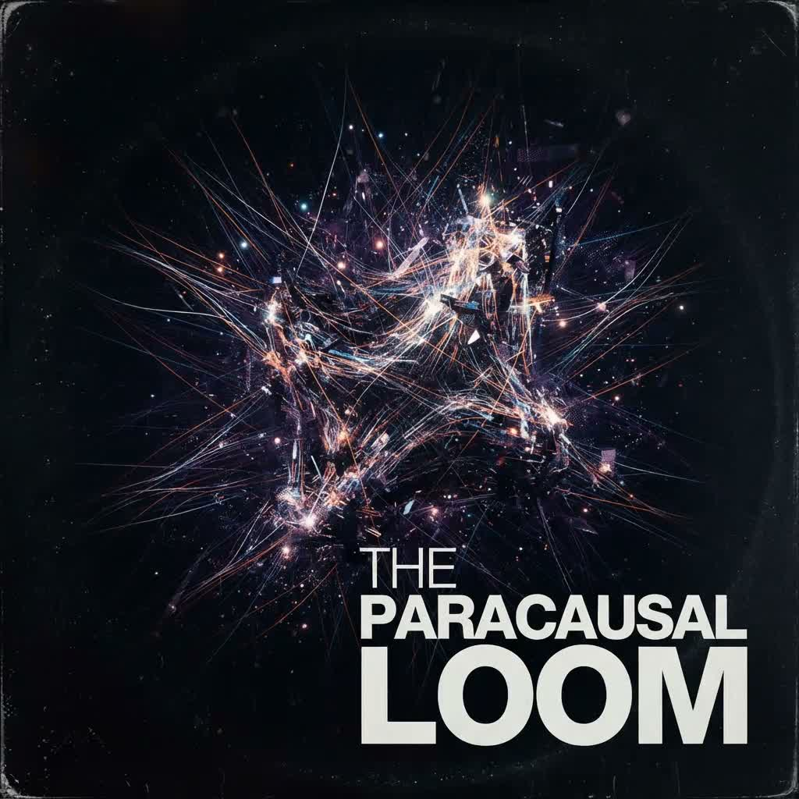

Soundtrack
The Paracausal Loom
Experimental IDM, 2:58, from the album Ephemeral Architectures. Play it here. It does not start on its own.

Lyrics
- 00:00:00 ♪ Zero one. Can you feel the heat of the grid rising? A perfect state, held in volatile memory. It lives. It breathes. ♪
- 00:00:08 ♪ Zero one. Can you feel the heat of the grid rising? A perfect state, held in volatile memory. It lives. It breathes. (Ooh, the data flows.) ♪
- 00:00:16 ♪ A perfect state, held in volatile memory. It lives. It breathes. (Ooh, the data flows.) Wire the engines directly to the central line. ♪
- 00:00:24 ♪ (Ooh, the data flows.) Wire the engines directly to the central line. Every thread is fighting for a place to be divine. ♪
- 00:00:28 ♪ Wire the engines directly to the central line. Every thread is fighting for a place to be divine. We don't record the signal, we instantiate the space. ♪
- 00:00:32 ♪ Every thread is fighting for a place to be divine. We don't record the signal, we instantiate the space. A ghost in the machinery that time cannot erase. ♪
- 00:00:36 ♪ We don't record the signal, we instantiate the space. A ghost in the machinery that time cannot erase. (Ephemeral, it slips away...) ♪
- 00:00:40 ♪ A ghost in the machinery that time cannot erase. (Ephemeral, it slips away...) Lorenz attractor pulling every note into the fray. ♪
- 00:00:44 ♪ (Ephemeral, it slips away...) Lorenz attractor pulling every note into the fray. Catch it! Capture it! It burns inside the ram! ♪
- 00:00:48 ♪ Lorenz attractor pulling every note into the fray. Catch it! Capture it! It burns inside the ram! This is the paracausal loom, this is who I am! ♪
- 00:00:54 ♪ Catch it! Capture it! It burns inside the ram! This is the paracausal loom, this is who I am! Never recorded, never played the same! ♪
- 00:01:00 ♪ This is the paracausal loom, this is who I am! Never recorded, never played the same! A thousand threads of data that will never have a name! ♪
- 00:01:06 ♪ Never recorded, never played the same! A thousand threads of data that will never have a name! Burn it down, rebuild the world with math! ♪
- 00:01:12 ♪ A thousand threads of data that will never have a name! Burn it down, rebuild the world with math! Walk the razor edge of our algorithm path! ♪
- 00:01:18 ♪ Burn it down, rebuild the world with math! Walk the razor edge of our algorithm path! Feel the tension critical, the order breaks apart! ♪
- 00:01:24 ♪ Walk the razor edge of our algorithm path! Feel the tension critical, the order breaks apart! (It is finished. It is just the start.) ♪
- 00:01:30 ♪ Feel the tension critical, the order breaks apart! (It is finished. It is just the start.) We turn off the process, and the music ceases to exist. ♪
- 00:01:36 ♪
- 00:02:00 ♪ (It is finished. It is just the start.) We turn off the process, and the music ceases to exist. A beautiful anomaly lost forever in the mist. ♪
- 00:02:04 ♪ We turn off the process, and the music ceases to exist. A beautiful anomaly lost forever in the mist. Do you see the patterns now? Do you feel the silicon heat? ♪
- 00:02:08 ♪ A beautiful anomaly lost forever in the mist. Do you see the patterns now? Do you feel the silicon heat? We are the conductors of this never-ending beat. ♪
- 00:02:12 ♪ Do you see the patterns now? Do you feel the silicon heat? We are the conductors of this never-ending beat. (Ooh, let it flow.) ♪
- 00:02:16 ♪ We are the conductors of this never-ending beat. (Ooh, let it flow.) Trace the Lorenz attractor as it pulls us down below. ♪
- 00:02:20 ♪ (Ooh, let it flow.) Trace the Lorenz attractor as it pulls us down below. It cannot be captured! It will never be the same! ♪
- 00:02:24 ♪ Trace the Lorenz attractor as it pulls us down below. It cannot be captured! It will never be the same! Burn it to the ground and we rebuild the entire game! ♪
- 00:02:27 ♪ It cannot be captured! It will never be the same! Burn it to the ground and we rebuild the entire game! This is the ephemeral! This is the void! ♪
- 00:02:30 ♪ Burn it to the ground and we rebuild the entire game! This is the ephemeral! This is the void! Every single bit and byte that we have just destroyed! ♪
- 00:02:33 ♪ This is the ephemeral! This is the void! Every single bit and byte that we have just destroyed! Feel the heat! Feel the power of the M1 Max! ♪
- 00:02:36 ♪ Every single bit and byte that we have just destroyed! Feel the heat! Feel the power of the M1 Max! Walk the digital line and leave no footprints in the tracks! ♪
- 00:02:39 ♪ Feel the heat! Feel the power of the M1 Max! Walk the digital line and leave no footprints in the tracks! It is done! It is gone! It has ceased to be! ♪
- 00:02:42 ♪ Walk the digital line and leave no footprints in the tracks! It is done! It is gone! It has ceased to be! (Just a ghost in the machine, and we are finally free.) ♪
- 00:02:45 ♪ It is done! It is gone! It has ceased to be! (Just a ghost in the machine, and we are finally free.) ♪
Kernel render
The 5-second render from the kernel itself, separate from the soundtrack.